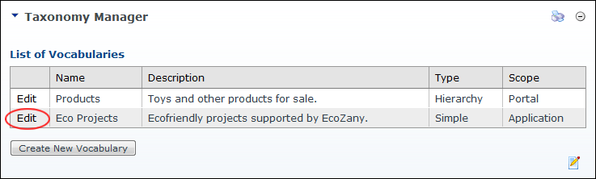
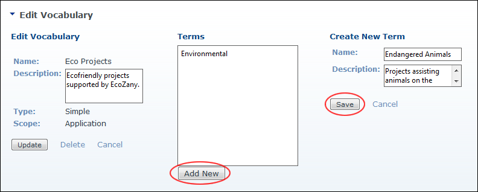

Adding Terms (Simple Vocabulary)
How to add terms to a simple vocabulary using the Taxonomy Manager module.
- Navigate to Admin > Advanced Settings >
 Taxonomy - OR - Go to a Taxonomy Manager module.
Taxonomy - OR - Go to a Taxonomy Manager module.
- Click the Edit link beside the vocabulary for this term. This opens the Edit Vocabulary page.

- Click the Add New button. This displays the Create New Term section.
- In the Create New Term section, complete these fields:
- In the Name text box, enter a name for this term.
- In the Description text box, enter a description for this term.
- Click the Save button. The new term is now displayed in the Terms hierarchical list.
- Repeat Steps 3-5 to add additional terms.

Adding a term to a simple vocabulary list